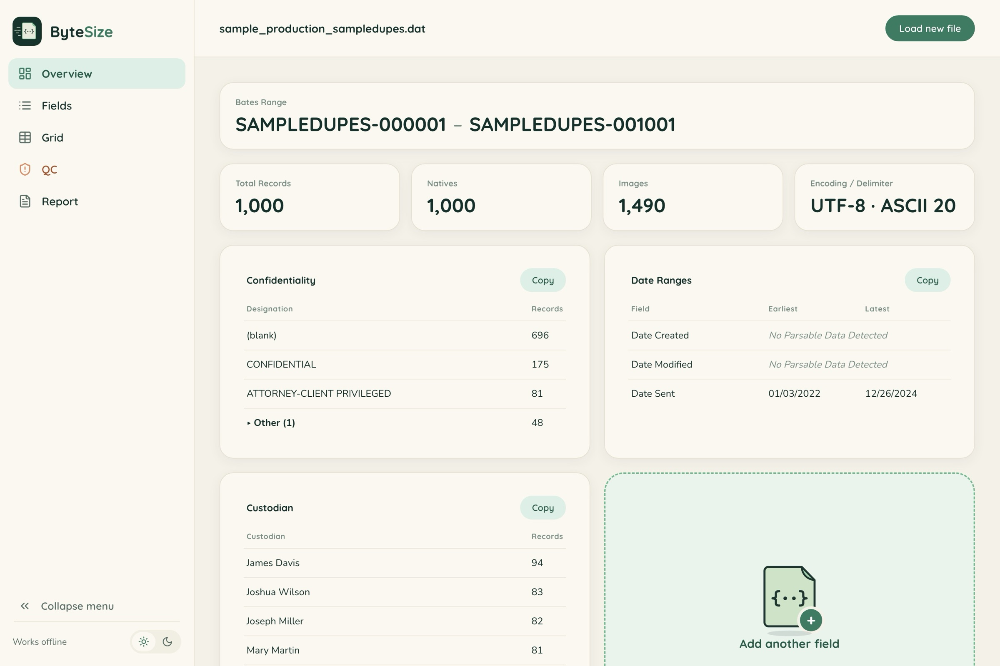
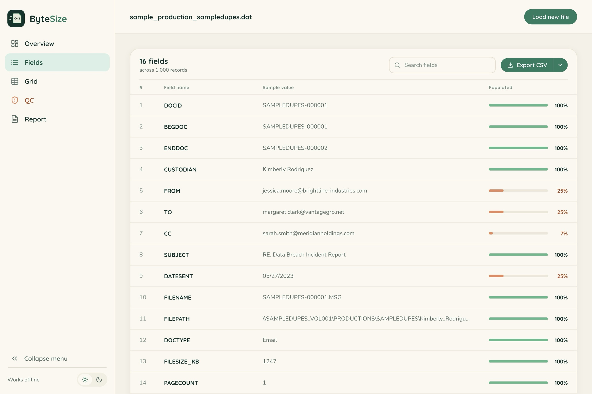
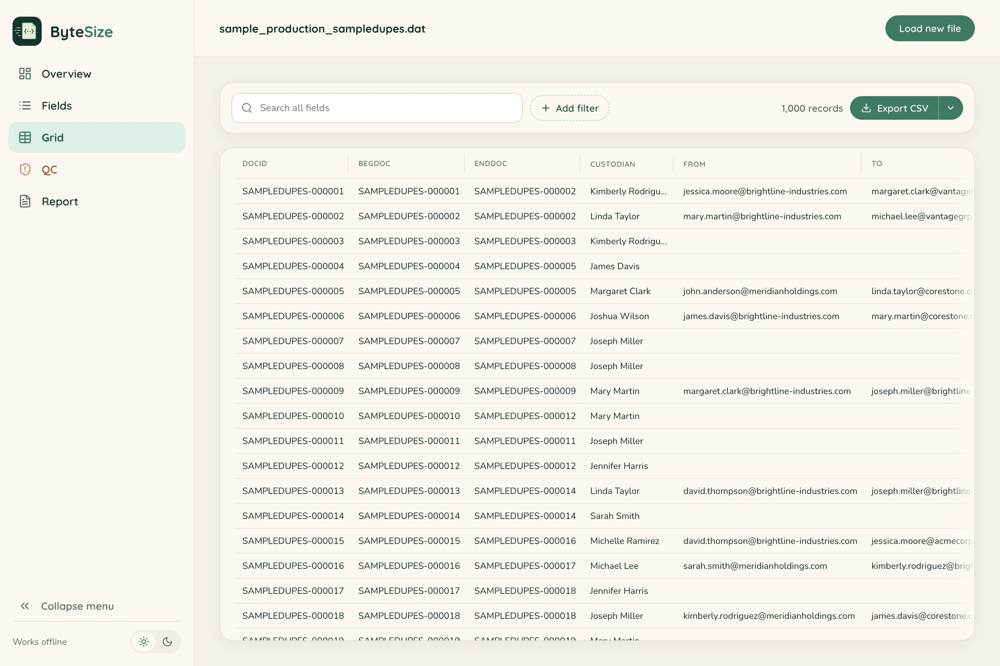
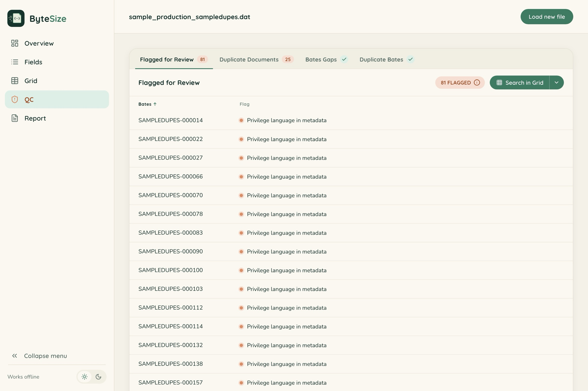
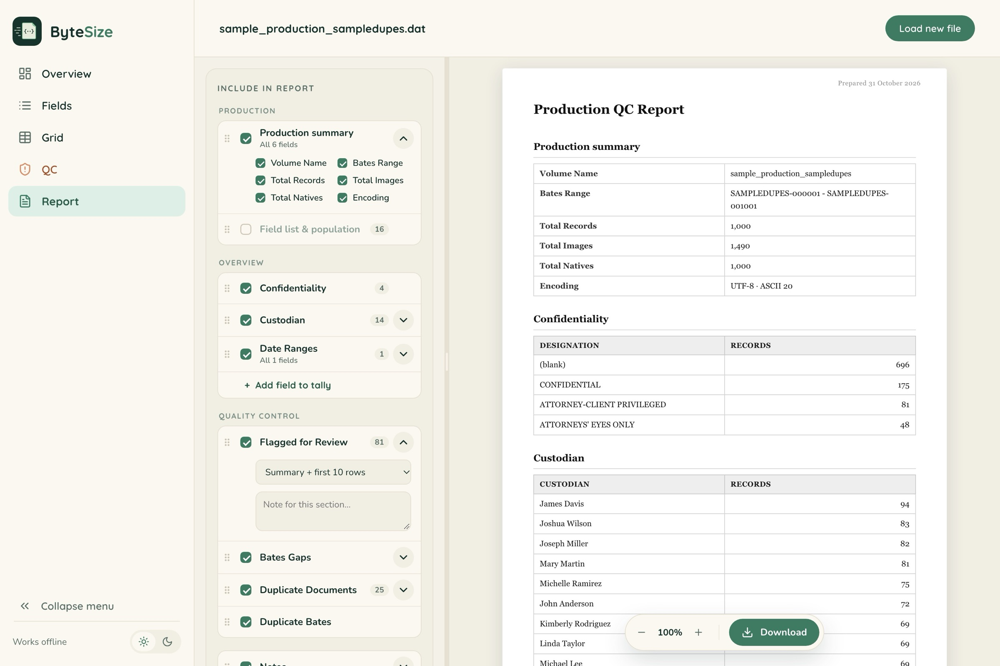

See what’s in a production before it’s loaded anywhere.
01 — What it does
One file. Five ways to review it.
Every production comes with a DAT file, a behind-the-scenes index of the documents being produced. It maps each record’s Bates information to its metadata, such as custodians, dates, subject lines, and more. The file is built for machines to read, not people, so opening one means scrolling through walls of symbols and run-together text.
ByteSize changes that. It parses your DAT file entirely on your own computer, offline, and lays out the metadata in a clear, readable format, so you can see what’s in a production before it’s loaded anywhere.





Your file is read in the browser using its local File API. No server, no analytics, and no external connections in the code.
Parses 500,000 records in about 5.5 seconds on a typical laptop.
02 — Use cases
Where it earns its place in your back pocket.
Incoming
“What did opposing counsel just send?”
Loading production materials into a review workspace takes time, and we've all needed simple information ASAP. With ByteSize, you can get initial metrics from opposing counsel's production right away, whether that's a quick sense of what just arrived or a high-level look at the metadata to build your review plan.
Skip the duplicates and review each record once. If the production includes a unique hash value field (MD5 or SHA1), switch to the QC tab in ByteSize to identify records that are exact duplicates of each other, export the report, and pick one Bates number per set to review.
Outgoing
A final quality check before you serve.
Confirm the export is exactly what you intend to serve. It could save you a clawback letter. Catch any Bates gaps, duplicate numbers or records, and metadata that points to privilege.
The QC tab's “Flagged for Review” check highlights two kinds of records: those with privilege language anywhere in the metadata (such as “privileged,” “attorney-client,” “work product,” or “withheld”), and those whose metadata was scrubbed entirely. Instead of hunting for them, click “Search in Grid” to pull up just the flagged records and review them.
ESI protocol
Were the agreed-upon fields produced?
Check that the fields produced match the ESI protocol. Each field shows a real sample value from the production, so you know exactly what it contains.
Targeted lookup
Find the records from a custodian in 2024.
Using the Grid tab, filter to the desired custodian(s), then search or sort the relevant date field to see how many records were produced in that window. Export the Bates numbers so you can review those records in full later and decide whether they're worth using as deposition exhibits.
03 — Get started
Four steps, one file.
One HTML file. Save it to your desktop, or bookmark it for quick access. It works fully offline, so your production metadata never leaves your computer, and it handles up to 500,000 records with ease.
- 01DownloadGrab the ByteSize zip and unzip it.
- 02OpenDouble-click the HTML file to open it in your browser.
- 03SelectChoose or drop in your DAT file.
- 04ReviewExplore all five views in seconds.
Before you rely on it
Always confirm productions against your review platform. ByteSize can make mistakes too.
04 — FAQ
Frequently Asked Questions
Is my file uploaded anywhere?
No. ByteSize opens your DAT with your browser's local File API and does all the work on your own computer. There's no server, no analytics, and no external connection in the code. Close the tab and the data is gone.
Does it work on a locked-down or air-gapped computer?
Yes. Everything, fonts included, lives inside the one HTML file, so there's nothing to install and no admin rights needed. It runs the same with the network unplugged.
What load-file formats does it read?
Concordance DAT files (þ and ® delimiters, or ASCII 20), plus plain delimited text separated by tabs, pipes, commas, semicolons, or carets. The delimiter and encoding (UTF-8, UTF-16 LE/BE, or Windows-1252) are detected automatically.
What if ByteSize doesn't recognize my Bates fields?
ByteSize knows the common names for Bates fields. If your production uses different names, ByteSize will ask you to review the fields. It makes its best guess first, but you can confirm or change any match so you’re reviewing the most accurate information. Select “Remember for files like this,” and you won’t have to match the fields every time.
What is the “Flagged for Review” QC check, and how does it work?
It flags two kinds of records. Privilege language in metadata: any record whose metadata mentions terms like “privileged,” “attorney-client,” “work product,” or “withheld,” so you can confirm nothing privileged is about to go out the door. Scrubbed metadata: records where only production fields, like Bates numbers, are populated, which usually means the rest was intentionally removed. Use “Search in Grid” to jump straight to the flagged records. Flags are a starting point for your review; ByteSize doesn't make privilege determinations.
Does it cost anything?
No. ByteSize is free to download and use. There's no license key, account, or subscription.
Which browsers does it work in?
Any current version of Chrome, Edge, Firefox, or Safari.
How big a production can it handle?
It's been tested with 500,000 records, which parse in about 5.5 seconds on a typical laptop. Productions past roughly a million rows can run into the browser's own memory limits.
05 — Contribute
Built for the people who want to read production metadata.
With your help we can improve it too! Encountered a DAT that isn't parsing? See an opportunity to add a new item? Send me a note with a description of the issue or a suggestion.